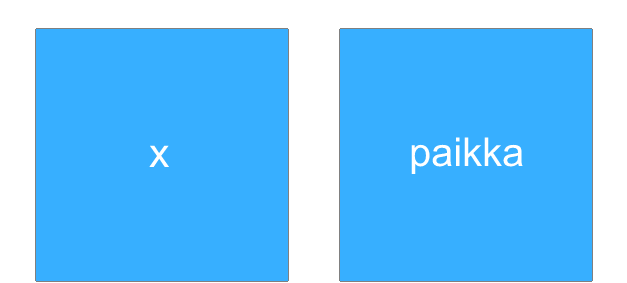
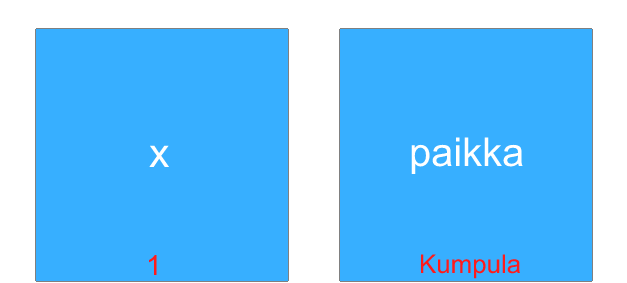

Tässä osiossa opetellaan Pythonin alkeet: tulostus, muuttujien käyttäminen, syötteen kysyminen käyttäjältä sekä ehtolauseet.
Näiden avulla teemme pieniä harjoituksia ja lopulta laskimen, jolle käyttäjä voi antaa kaksi lukua sekä haluamansa laskutoimituksen.
Tulokseksi käyttäjä saa laskutoimituksen tuloksen.
Yleisiä ohjeita
Tehtävien kohdat on alussa numeroitu. Tee siis jokainen kohta, ja kysy neuvoa ohjaajalta jos et ymmärrä mitä kohdassa pyydetään tekemään. Useimmissa
ohjelmointikäsitteissä ymmärrys syntyy vasta kun testaa materiaalin esimerkkejä, joten testaa kaikkia esimerkkejä itse. Mikäli et ymmärrä jotain kohtaa,
kysy reippaasti neuvoa ohjaajalta.
Miten Python-koodia koodataan ja miten tietokone suorittaa sen?
Python-koodia koodataan kirjoittamalla tekstieditoriin. Tekstieditori on ohjelma, johon kirjoitetaan tekstiä.
Ohjelmointiin tarkoitetuissa tekstieditoreissa tekstit voidaan myös ajaa koodina. Python on tulkittava kieli. Se tarkoittaa suurpiirteisesti sitä, että
kun painetaan vihreää kolmiota joka ajaa ohjelman, Python-tulkki tulkitsee rivi kerrallaan koodisi tietokoneen ymmärtämään muotoon ja suorittaa koodirivin.
Tehtävien tekeminen
Tehtävät aukeavat painamalla sinistä nappia, jossa lukee "Tehtävä". Tehtävissä on ohjeet, joissa sanotaan mitä niissä tulee tehdä.
Lisäksi, ennen jokaista tehtävää on esimerkki, joka liittyy tehtävän aiheeseen ja johdattaa tehtävän tekemiseen.
Harjoitellaan ensin tulostamista. Tulostus voi olla jännä sana aluksi, mutta se tarkoittaa vain ruudulle ilmestyvää tekstiä.
Tämäkin teksti on tulostettu tähän jonkin ohjelman toimesta.
Paina alla olevaa sinistä nappia avataksesi esimerkin, joka näyttää miten tulostaminen tapahtuu Python-kielellä.
Myös tehtävät aukeavat nappia painamalla, kokeile tehdä ensimmäinen tehtävä. Ei haittaa vaikka et ymmärtäisi esimerkistä kaikkea.
Esimerkkeihin voi palata ja tehtäviä voi kokeilla tehdä loputtomasti.
Harjoitellaan tulostamista vielä vähän lisää. Loputkin tehtävät aukeavat nappia painamalla.
Muuttujat
Muuttujaa voi ajatella osoitteena. Se on tekstinpätkä, joka kertoo koodille mistä jokin tieto löytyy tietokoneesta,
vähän kuin osoite Pietari Kalmin katu 5 kertoo ihmisille mistä Linkki-kerhon tilat löytyvät Suomen kartalla.
Tieto, johon muuttuja osoittaa voi olla esimierkiksi luku, kuten 10, tai merkkijono eli tekstinpätkä.
Toinen tapa ajatella muuttujia on kuvitella ne nimellisiksi laatikoiksi, jotka sisältävät yhden esineen per laatikko.
Seuraavassa kuvassa havainnollistamme muuttujia laatikoina, joiden nimet
ovat x ja muuttuja. Laatikot ovat tällä hetkellä tyhjiä.

Nyt laitamme laatikoihin sisältöä. Laatikko jonka nimi on x, saa sisällökseen numeron 1. Laatikko jonka nimi on paikka, saa sisällökseen
Kumpula.

Esimerkissä 2 on Python-koodi, jossa ensimmäisellä rivillä asetetaan muuttujaan x arvo 1,
ja toisella rivillä asetetaan muuttujaan paikka
arvo Kumpula. Eli sama kuin mitä tehtiin ylläolevien laatikoiden kanssa.
Kun muuttujaan tallennetaan merkkijono, eli esimerkiksi Kumpula, merkkijonon ympärille pitää lisätä lainausmerkit.
Myös numero voi olla merkkijono jos sen ympärille lisää lainausmerkit, esimerkiksi '12' on merkkijono.
Koodissa lopuksi tulostetaan muuttujien sisältö, jotta voidaan olla varma, että niissä on oikeat asiat.
Muuttujan tulostaminen edellyttää aina, että muuttujaan on tallennettu jokin arvo aiemmin koodissa.
Muista: merkkijonon ympärillä on hipsut tai yläpilkut! Esim. "Koodaaminen on kivaa : )"